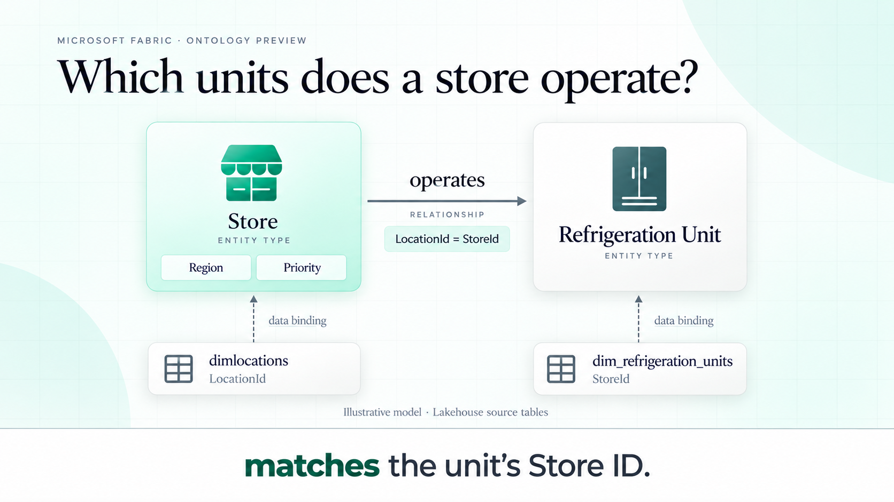
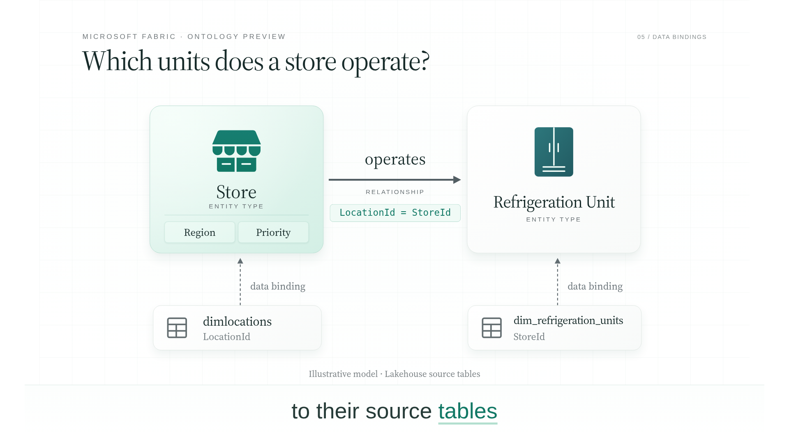
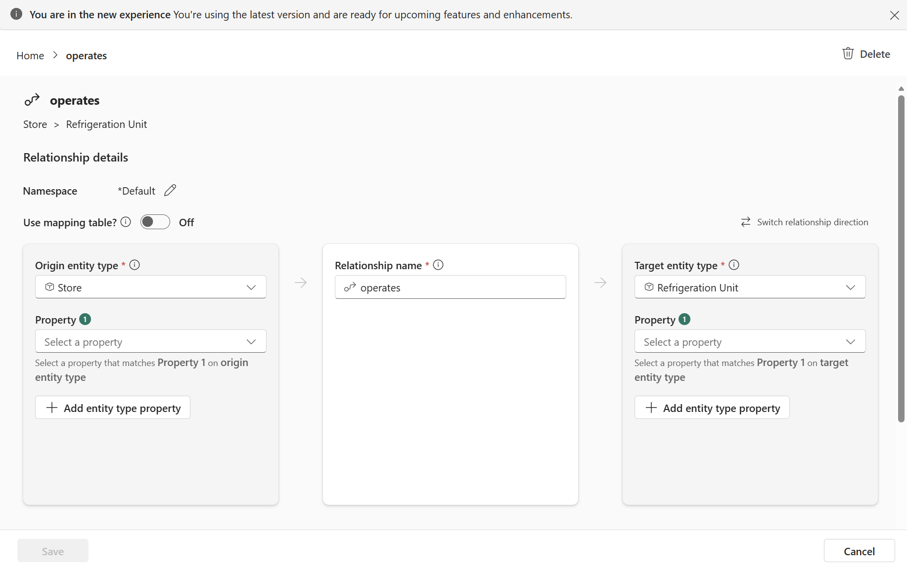

42-second technical rewrite · Fabric palette · Narration and bottom captions
Download video · Read rewrite and reasoning · Download captions
This segment explains how to model the question. It does not show an executed query or actual returned refrigeration units. Narration is a synthetic preview; captions are burned into the video.


Microsoft's retail tutorial documents Store operates Refrigeration Unit and the matching LocationId/StoreId fields. This is its actual configuration screenshot, preserved as source evidence.
